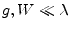

According to W.J.Getsinger [56] a coplanar series gap (see fig. 12.5) is supposed to be the dual problem of the inductance of a connecting strip between twin strip lines.
The inductance of such a thin strip with a width  and the length
and the length
 is given to a good approximation by
is given to a good approximation by
| (12.32) |
where and . Substituting this inductance by its equivalent capacitance of the gap in CPW yields
| (12.33) |